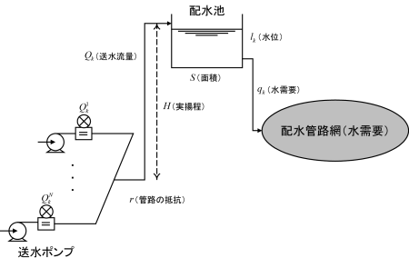

|
Optimization benchmark problem for water supply pump
scheduling
Summary
The water supply pump scheduling problem is formulated to determine a water supply pump operational schedule so that the number of pump on-off switching and total of power consumption are minimized with satisfying a water demand and keeping the water level of the distribution reservoir within a given range in the water supply process as shown in Fig. 1.
This benchmark problem provides the 24 time operation scheduling problem with 6 pumps.
The specific formulation is given in the references [1] and [3].

Fig. 1: Water supply process [1] (the characters in the figure are written in Japanese)
Class and scale
- Class: Discrete nonlinear two objective optimization problem
- Number of decision variables: 24 (Continuous: 0, Discrete: 24)
- Number of inequality constraints: 73 (Linear: 24, Nonlinear: 49)
- Number of equality constraints: 0 (Linear: 0, Nonlinear: 0)
Known Feasible Solutions (OFV is objective function value. Sol. is solution.)
| Method |
OFV
(Pareto solution) |
Constraint violations |
Ref. |
Reporter |
Sol. |
| Total |
Tolerance |
| A* Search Algorithm |
f1 = 2, f2 = 3417.83764
f1 = 3, f2 = 3306.95791
f1 = 4, f2 = 3277.06181
f1 = 6, f2 = 3251.44448
f1 = 8, f2 = 3224.37637
|
0 |
0 |
[2] |
Y. Ueno, et al. |
Sol.† |
| Random Search × ε-constraint Method |
f1 = 3, f2 = 3365.29934
f1 = 4, f2 = 3334.67785
f1 = 5, f2 = 3281.34058
f1 = 6, f2 = 3277.06181
f1 = 7, f2 = 3254.27247
f1 = 8, f2 = 3224.37637
|
0 |
1.0 × 10-10 |
[1] |
T. Okamoto |
Sol.† |
†Decompress the obtained file. Replace the decompressed text files by "P2_solution_y.txt" in the source code.
Source code
P2.zip (C/C++) — See "Readme.txt" in order to know how to use.
References
| [1] |
Investigating R&D committee on new development of computational intelligence techniques and their applications to industrial systems: "Optimization benchmark problems for industrial applications", IEEJ Tech. Rep., No. 1287, Section 3.3 (2013) [in Japanese] |
| [2] |
Y. Ueno and K. Mori: "Optimizing pump operation scheduling for water supply systems", Proc. of IEEE Int. Conf. on System Science and Engineering 2014, pp. 171–174 (2014) |
| [3] |
K. Yokokawa, T. Okamoto, A. Kawagoe, Y. Ueno, and K. Mori: "Formulation and solutions for daily operation scheduling problem of water supply pump", Proc. of the first IEEJ International Workshop on Sensing, Actuation, and Motion Control (SAMCON2015), IS1-4 (2015) |
Change log
- June 5th, 2015: The bibliographical data of the reference [3] is updated.
- Dec. 3rd, 2014: English page is released.
- Sept. 18th, 2014: A new solution is added to Known Feasible Solutions.
- June 3rd, 2014: Tolerance of constraint violations can be read from the external file.
- Mar. 13th, 2014: Parameters can be read from the external file. Destructor is modified.
- Nov. 7th, 2013: The source code is released.
|
|
|